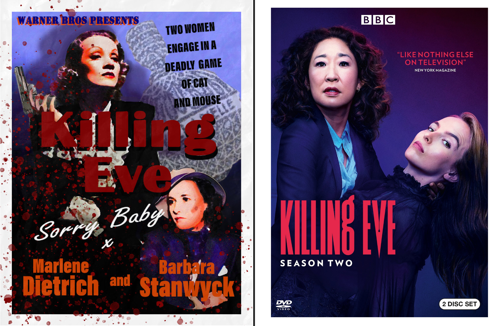
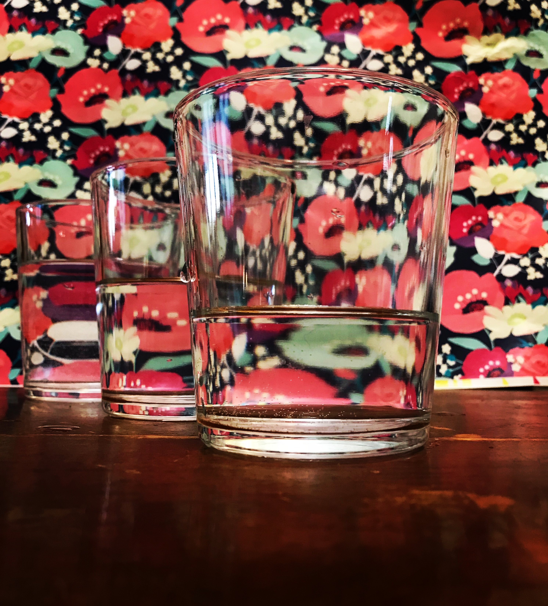
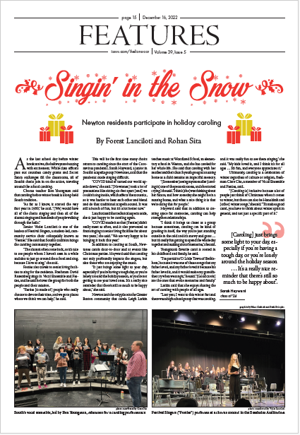
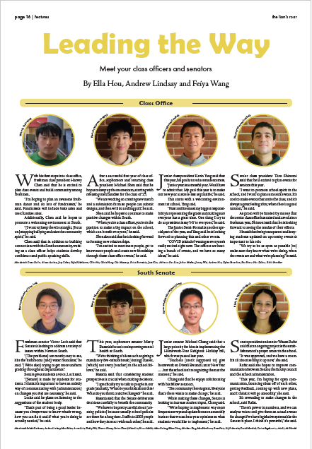
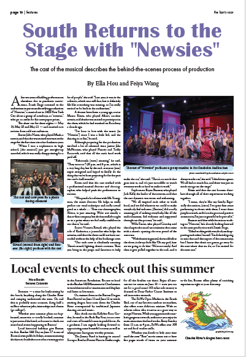

My Hobbies
Violin
I've been playing the violin since I was 5 years old, taking lessons with a private instructor. Growing up, I
participated school orchestras, as well as NEC Prep.
I particularly like playing pop songs and chinese folk songs on the violin!

Art
I enjoy creating all kinds of art - photography, colored pencil drawings,
watercolor paintings, crochet, graphic design with photoshop and illustrator, etc.
I've participated in art competitions and have won multiple awards. Here are a couple
of my favorite pieces:
Watercolor painting of my family on vacation in Washington DC

Photoshop re-imagining of the Killing Eve TV poster if it was made in the 1940s
with 1940s actresses (my work = left, original = right)
Cool photography of a wallpaper through water glasses
Layout work I did in Indesign for my high school newspaper, The Lion's Roar



Check out more from the Lion's Roar here